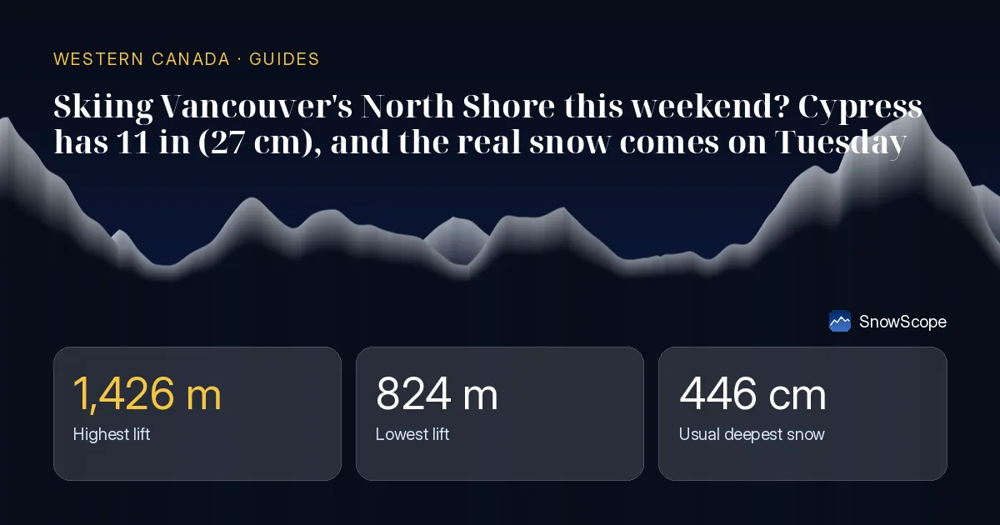
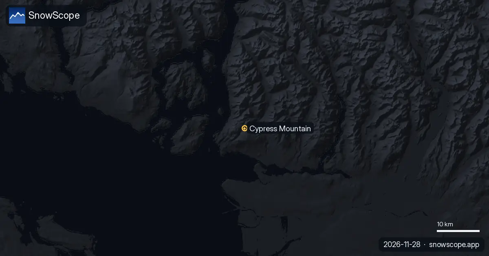

Skiing Vancouver's North Shore this weekend? Cypress has 11 in (27 cm), and the real snow comes on Tuesday
The North Shore is not ready. Cypress Mountain has 11 in (27 cm) on its upper runs this Saturday, Grouse 13 in (33 cm) and Mount Seymour 7 in (17 cm), and at 3,691 ft (1,125 m) on Cypress the pack is 1 in (2 cm) where a usual 28 November has 28 in (70 cm). The storms that buried Whistler fell as rain on the local mountains. The weekend is dry; the first useful snow arrives on Tuesday, 1 December, with about 3 in (8 cm) at the top of Cypress.
See the live snow forecast for Cypress Mountain in the SnowScope appSnow depth, powder alerts and the 3D map, free.

Why the North Shore missed out
The three local hills top out between 4,029 ft (1,228 m) and 4,678 ft (1,426 m), and the mild Pacific storms of the last two weeks had their snow line above that for long stretches. Cypress got 17 in (42 cm) in seven days, Grouse 19 in (48 cm), Seymour 12 in (30 cm), and much of it was followed by rain.
This is the normal November pattern on the North Shore: the hills wait for a colder storm, and when it comes they can gain half a metre in a day.
| Hill | Top | Snow up top today | Due on Tuesday |
|---|---|---|---|
| Cypress Mountain | 4,678 ft (1,426 m) | 11 in (27 cm) | 3 in (8 cm) |
| Grouse Mountain | 4,029 ft (1,228 m) | 13 in (33 cm) | 4 in (11 cm) |
| Mount Seymour | 4,117 ft (1,255 m) | 7 in (17 cm) | 3 in (7 cm) |
What a normal December brings
The North Shore is one of the snowiest places in Canada once it turns cold. At 3,691 ft (1,125 m) on Cypress the usual depth is 41 in (105 cm) on 8 December, 4.1 ft (126 cm) on 15 December and 4.6 ft (141 cm) on Christmas Day; a 50 cm (20 in) base by New Year came in every one of the 46 winters. Grouse's usual Christmas is 43 in (108 cm) at 3,445 ft (1,050 m).
The deepest winter on Cypress, 1998-99, peaked at 13 ft (397 cm); the leanest, 2014-15, at 43 in (108 cm). December's usual gain at mid-mountain is about 4 ft (123 cm), which says how fast this can turn.
The weekend verdict
Saturday and Sunday: no new snow on any of the three hills, firm old snow up top, bare patches lower down. Night skiing and the Grouse Grind are not on the menu yet; the hills open their lifts on their own schedule once the cover is safe.
Tuesday: about 3 in (8 cm) on Cypress, 4 in (11 cm) on Grouse and 3 in (7 cm) on Seymour at the top, and 4 in (10 cm) over seven days on Cypress. Over the hill in Whistler the alpine already has a season's worth of snow.
Quick answers
Which North Shore hill opens first? Usually Cypress or Grouse, whichever gets the first cold storm; Seymour, lower at the base, often follows.
Is it worth driving to Whistler instead this weekend? Yes, if the alpine is what you want; see the Whistler Christmas article.
When will the North Shore be good? Often by mid-December; the Cypress snow page, Grouse snow page and Seymour snow page show the daily depth.
The North Shore's February
A usual February on Cypress has 8 ft (244 cm) at 3,691 ft (1,125 m), and a rich one 9.3 ft (283 cm); the usual 20 December already has 4.5 ft (137 cm). Grouse's usual February is 5.9 ft (180 cm). These are Coast Mountain numbers, and they are why the three hills can look bare at the end of November and be buried by Christmas.
Tips for skiers
- Skip the North Shore this weekend; come back after Tuesday's snow, and watch for the first cold storm of December.
- Keep the car ready for Whistler or Manning Park instead if you must ski on 28 or 29 November.
- Compare the coast and the interior on the Western Canada snow hub.
About these numbers
Snow numbers: SnowScope's snow map and forecast for today, and our record of 46 past winters at each resort (an estimate for the area, not the resort's own report).
Official avalanche bulletins: Avalanche Canada
Cite this report
For research, teaching or the press: the numbers and charts are free to reuse under CC BY 4.0 with this citation.
SnowScope (2026), Skiing Vancouver's North Shore this weekend? Cypress has 11 in (27 cm), and the real snow comes on Tuesday, https://snowscope.app/blog/en/2026/11/vancouver-north-shore-ski-this-weekend-cypress-grouse-seymour-28-29-november-2026.html, accessed 2026-11-28
SnowScope (Atlas Labs). (2026, November 28). Skiing Vancouver's North Shore this weekend? Cypress has 11 in (27 cm), and the real snow comes on Tuesday. SnowScope snow reports. https://snowscope.app/blog/en/2026/11/vancouver-north-shore-ski-this-weekend-cypress-grouse-seymour-28-29-november-2026.html
BibTeX
@misc{snowscope2026vancouvernorthshoreskith,
author = {{SnowScope (Atlas Labs)}},
title = {Skiing Vancouver's North Shore this weekend? Cypress has 11 in (27 cm), and the real snow comes on Tuesday},
year = {2026},
month = nov,
howpublished = {\url{https://snowscope.app/blog/en/2026/11/vancouver-north-shore-ski-this-weekend-cypress-grouse-seymour-28-29-november-2026.html}},
note = {Published 2026-11-28 15:27 UTC; accessed 2026-11-28}
}· CC BY 4.0 · Methods, data and tools →
Cypress Mountain: snow and temperature by height, this winter vs last (tools) →
Follow Cypress Mountain
Free: a message when fresh snow is coming, and the forecast every morning.
More snow reports

Two-week snow forecast for Western Canada: Mount Washington Alpine Resort forecast to receive 202 cm by 5 December, with the heaviest snow on 24 November.

Western Canada mountains carry 42% of their normal snow for mid-November as of 12 November, but 142 cm is forecast over the next two weeks.

Freezing level reaches 1,500 m at Banff Sunshine Village on November 19. Fresh snow fell across Western Canada in the last 72 hours, but rain threatens the new powder.